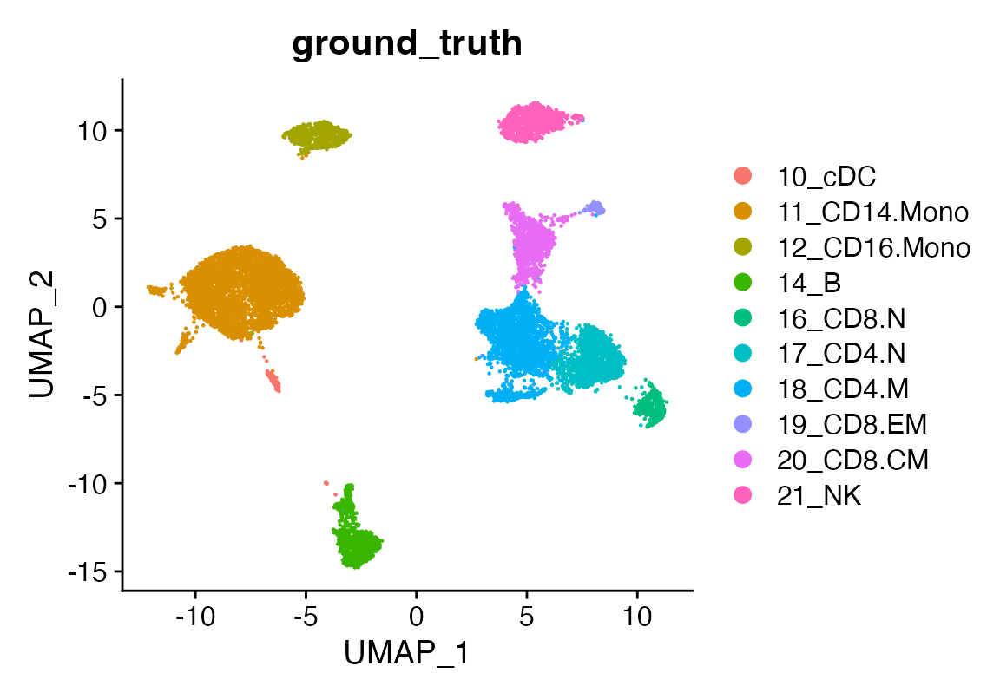

Extra functions
2024-10-31
Extras.RmdFirst, ensure you have the devtools R package installed,
which allows you to install packages from GitHub. If
devtools is installed, you can easily install viewmastR
using the following command:
devtools::install_github("furlan-lab/viewmastR")
# Load required packages
suppressPackageStartupMessages({
library(viewmastR)
library(Seurat)
library(ggplot2)
library(scCustomize)
library(httpgd)
})
# Load query and reference datasets
seu <- readRDS(file.path(ROOT_DIR1, "240813_final_object.RDS"))A clean Seurat object
DimPlot(seu, group.by = "ground_truth")
Exporting R objects to scanpy is painful… As an inefficient but effective work around we have written code that enables you to export a Seurat object to the same three file format output by cellranger. This makes import into scanpy a breeze.
The command creates a folder called 3file in the directory you provide. By default the meta data, reductions, and variable features are exported.
Currently, only Seurat objects are supported
make3file(seu, dir = file.path(ROOT_DIR1))
list.files(file.path(ROOT_DIR1, "3file"))## [1] "barcodes.tsv.gz" "features.tsv.gz"
## [3] "matrix.mtx.gz" "meta.csv"
## [5] "pca_reduction.tsv.gz" "umap_reduction.tsv.gz"
## [7] "variablefeatures.tsv.gz"